In this writing, I want to share how exploring Fabric’s selective branching turned a simple workspace experiment into a full DevOps workflow discovery — from branching out with only the items I needed, all the way through creating a pull request in Azure DevOps and syncing the changes back to the main workspace.
I didn’t expect a quick test of the Branch out to workspace feature to raise so many questions. My plan was simple: branch out, make a small change, and commit. Instead, I found myself asking “How do I merge back to main?”, “What happens to the workspace after the pull request?”, and “Why does Select related items only work in one direction?” Those unanswered questions became the real story.
1. The Starting Point: A Workspace Connected to Main
I started with a Contoso sample workspace connected to a Git repository in Azure DevOps. The workspace had several items — reports, semantic models, a lakehouse, and a SQL analytics endpoint — all synced to the main branch.
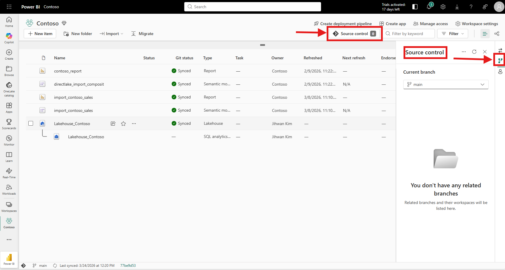
Opening the Source control panel and clicking the branch dropdown revealed the option I wanted to explore: Branch out to workspace. This creates a new branch and a new workspace in one step, giving you an isolated environment to work in without affecting the shared main workspace.
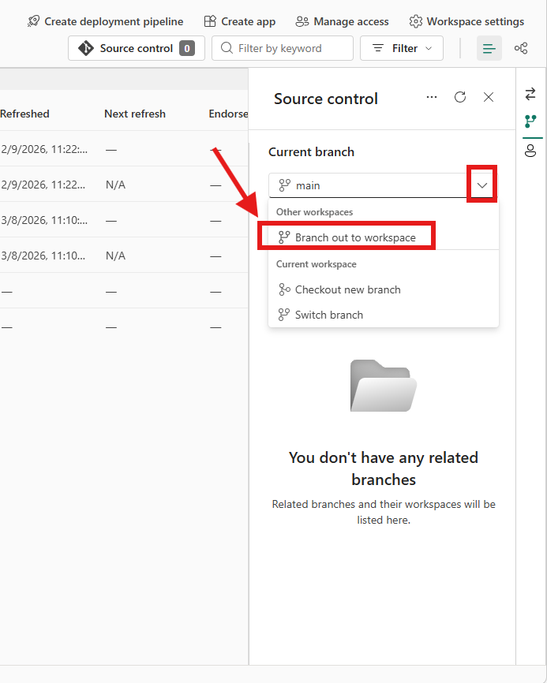
For teams sharing a single Fabric workspace, this is the moment where real feature isolation begins. No more making changes directly on main and hoping nothing breaks for everyone else.
2. The First Surprise: You Can Pick Just the Items You Need
Clicking Branch out to workspace opened a dialog where I named my branch and workspace. But the real discovery was the checkbox at the bottom: Select items individually (Preview).
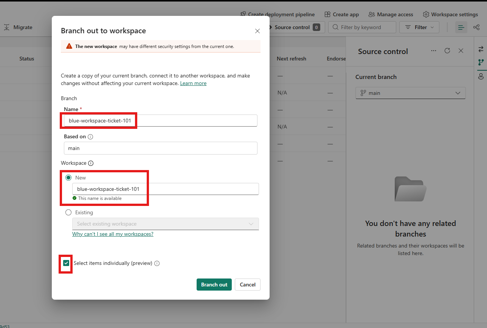
Checking that box changed the entire experience. Instead of cloning every item from the main workspace into the new branch, I could pick only what I needed. The Fabric March 2026 Feature Summary describes this as selective branching — a more focused branch-out experience that reduces clutter, improves reliability, and accelerates time-to-code.
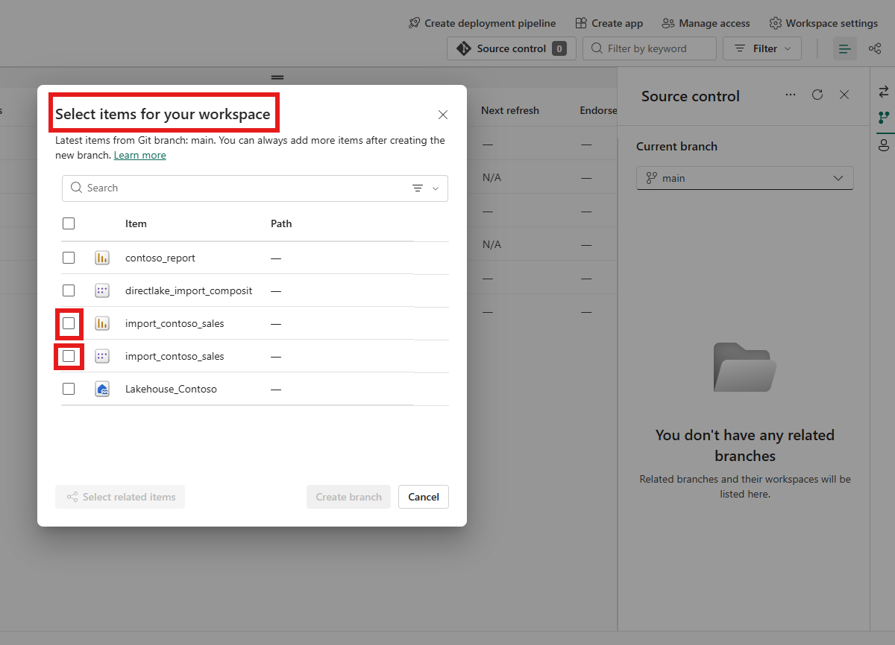
I selected a report and noticed the Select related items button at the bottom. Clicking it automatically added the related semantic model to my selection. That made sense — a report depends on its semantic model to function.
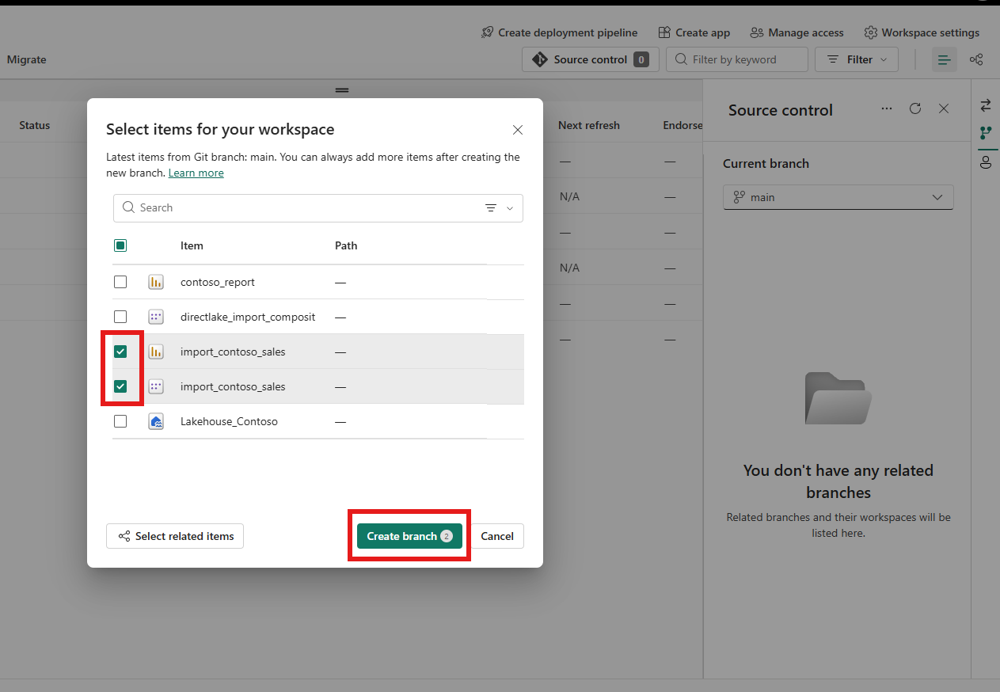
But here’s what caught my attention: when I selected a semantic model first instead of the report, clicking Select related items did not auto-select the reports that use it. The button only selects dependencies — items that the selected item requires to work — not items that depend on it. A report needs its semantic model, but a semantic model doesn’t need any specific report.
This was my first aha moment: Select related items follows the same dependency logic as deployment pipelines. It traces downward to what an item needs, not upward to what uses it. Once I understood this, the behavior made perfect sense — but it wasn’t obvious at first glance.
3. An Isolated Workspace With Only What I Needed
After clicking Create branch, Fabric created a new workspace called blue-workspace-ticket-101. The result was exactly what selective branching promises: a clean workspace containing only the two items I selected — the report and its semantic model.
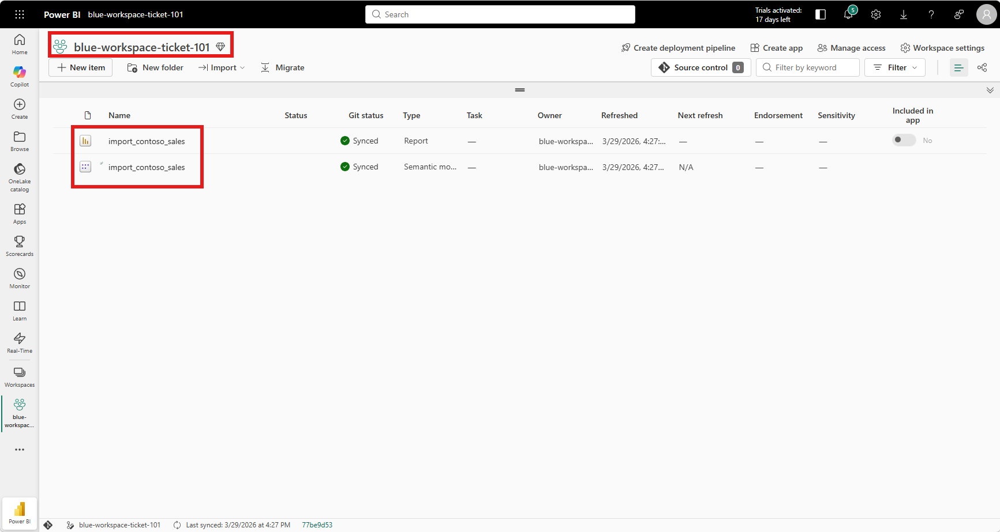
No lakehouse, no SQL analytics endpoint, no other reports. Just the items I needed for the task at hand. For a workspace with dozens of items, this dramatically reduces the noise and makes it immediately clear what you’re working on.
I also discovered that if I realized later I needed additional items, I didn’t have to start over. The source control panel offered a Select connected items option to add more items from the Git branch into the workspace after the fact.
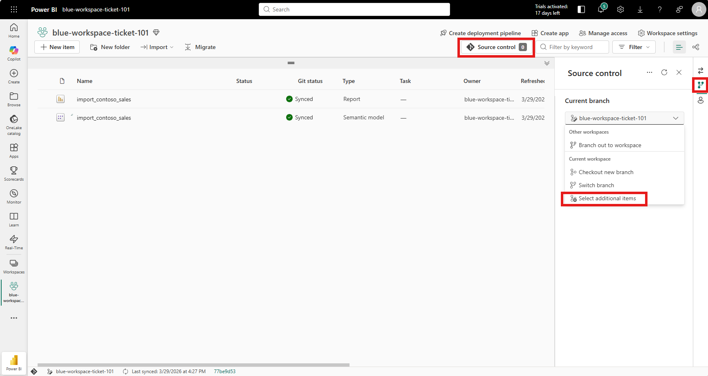
4. What Happened Behind the Scenes: Automatic Branch in Azure DevOps
I was curious whether Fabric actually created a real Git branch in Azure DevOps, or just an internal reference. Opening the workspace settings confirmed it: the Git integration section showed the branch name blue-workspace-ticket-101 was created and connected automatically.
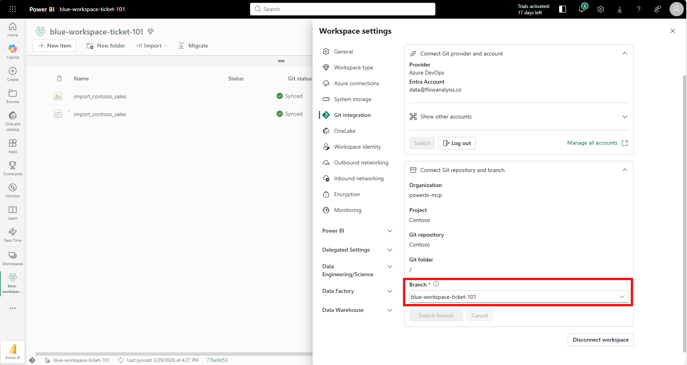
Switching to Azure DevOps confirmed the same thing from the other side — the branch appeared in the Branches view, created from main.
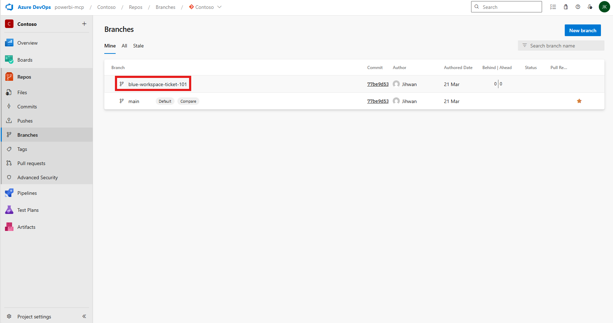
This is a real Git branch. Everything that works with Git branches — pull requests, branch policies, code reviews — works here.
5. Making Changes and Reviewing the Diff
With the isolated workspace ready, I refreshed the semantic model and made changes to both the report and the semantic model — adding two visuals to the global overview page and updating SPLY (Same Period Last Year) measures.
The workspace immediately reflected the changes. Both items showed a Modified status in the Git status column.
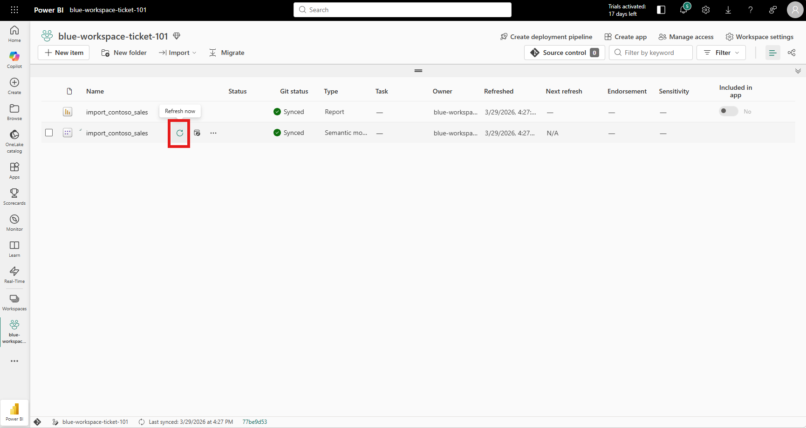
Opening the Source control panel showed two pending changes. But what caught my eye was the Review changes button — a side-by-side diff view right inside the Power BI service.
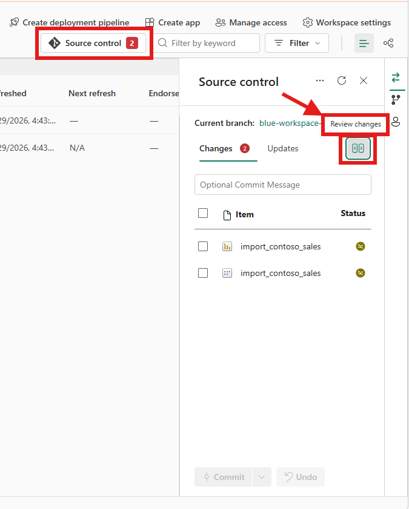
Clicking it opened the Change Review panel. I could see the exact TMDL changes side by side — the modified branch on the left, the current main branch on the right. The measure definition changes were highlighted in green and red, just like a Git diff.
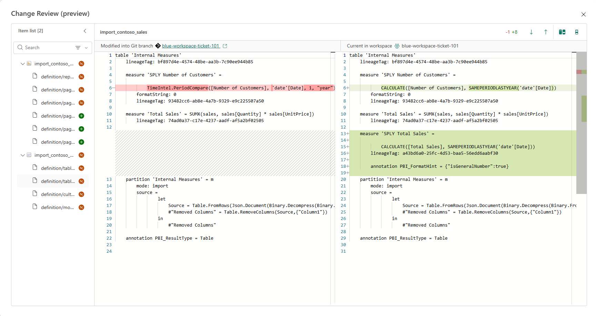
This was the second aha moment. Fabric’s built-in change review gives you a real code diff experience for semantic model changes, directly in the browser. For anyone used to reviewing pull requests in Azure DevOps or GitHub, this feels immediately familiar — and it happens before you even commit.
I wrote a descriptive commit message and committed both items.
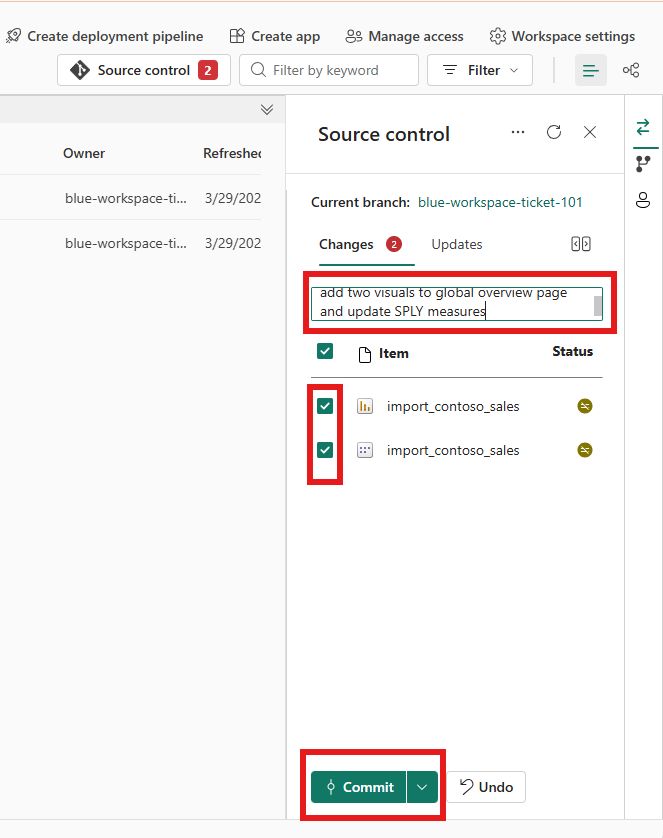
6. Merging Back: The Answer Lives in Azure DevOps
This was the question I didn’t know the answer to when I started: how do I merge my changes back to main? Is there a merge button somewhere in the Power BI service? Or do I need to go to Azure DevOps?
The answer: there is no merge-back UI in the Power BI service. You create a pull request in your Git provider — Azure DevOps in my case. In the Manage branches documentation, under Scenario 2 — Branch-out to another workspace, step 11 states that the review and merge processes are done through the related Git provider.
Switching to Azure DevOps, I could see my commit in the branch. I clicked Create a pull request.
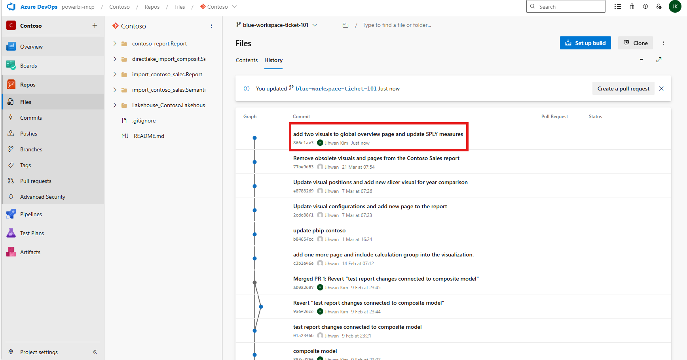
The pull request form pre-filled with my commit message. I set the target branch to main and created the PR.
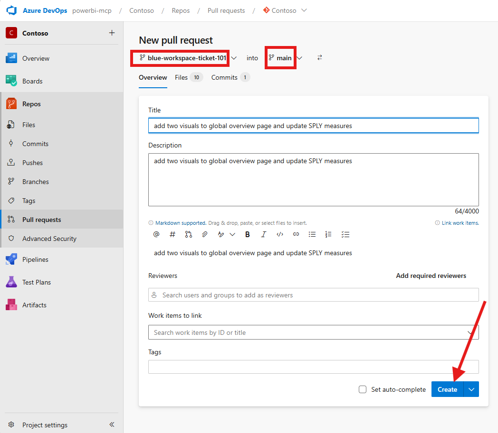
After approving the PR (in a real team scenario, a colleague would review and approve), I clicked Complete to merge.
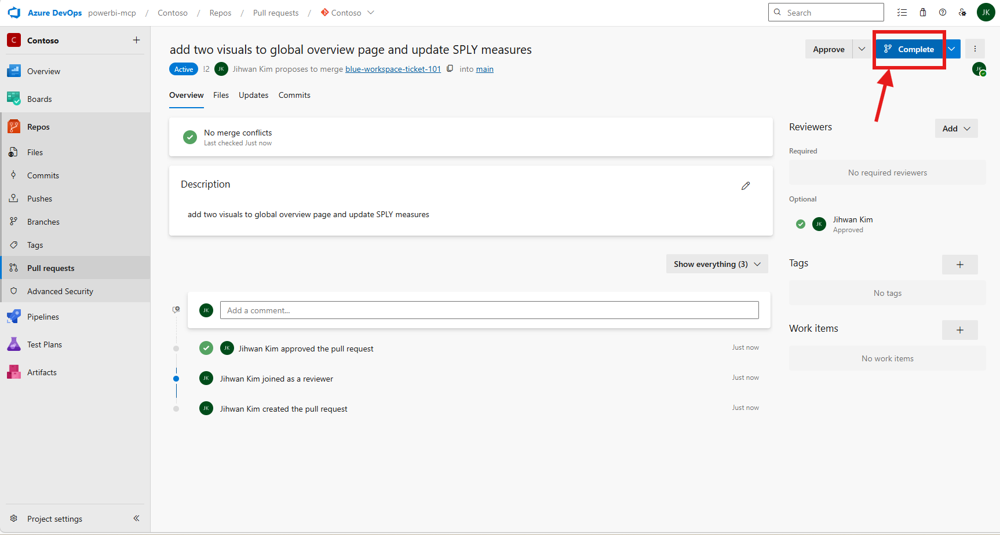
The merge created a new commit on the main branch. Azure DevOps showed the merged PR at the top of the commit history.
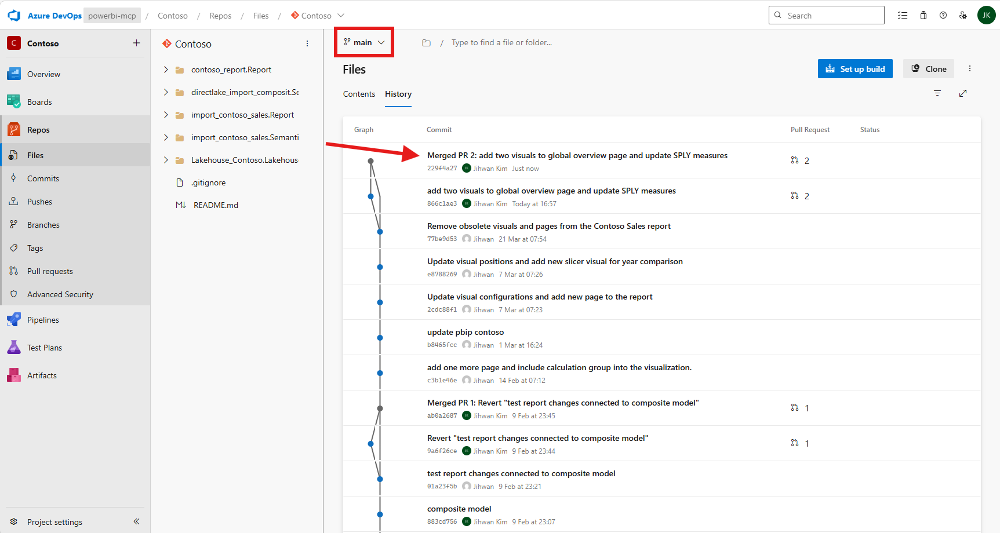
7. The Final Step: Syncing Main and Cleaning Up
Back in the Power BI service, the Contoso workspace on the main branch immediately showed an alert recommending to update the incoming changes from Git before continuing.
The Source control panel displayed the Updates tab with an Update all button. The import_contoso_sales items showed an Update Required status.
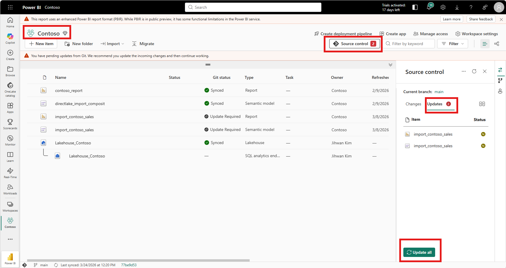
Clicking Update all pulled the merged changes into the main workspace. After the sync completed, all items returned to Synced status with no pending changes.
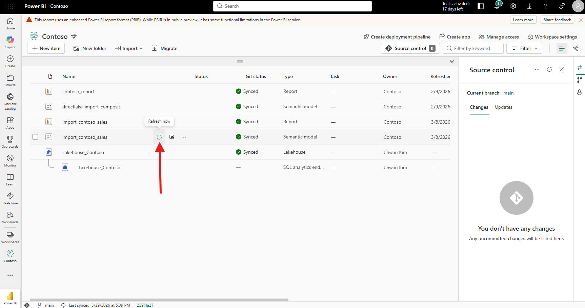
The loop was complete. But one question remained: what do I do with the blue-workspace-ticket-101 workspace now?
I looked through the Manage branches documentation but found no mention of automatic workspace cleanup after a pull request completes. The documentation describes the branch-out and merge flow in Scenario 2, but stops at the point where the main workspace receives the merged changes. From my testing, the feature workspace simply remains after the PR is merged — it is not automatically deleted. You need to manually delete the workspace and optionally delete the branch in Azure DevOps. For teams that create feature branches frequently, this means workspaces can accumulate quickly if not cleaned up.
8. From a DevOps Standpoint: This Is Foundational
Version control and isolation
Selective branching brings a pattern that software engineers have used for decades into the Fabric world: feature branches with minimal scope. Instead of cloning an entire workspace with all its items, developers branch out with only what they need. This reduces the risk of unintended side effects and makes it clear what a particular branch is about.
Code review through pull requests
The fact that merging back to main goes through Azure DevOps means teams can enforce branch policies, require reviewers, and run automated checks before changes reach the shared workspace. The built-in Change Review in the Power BI service provides a first look at the diff, and the pull request in Azure DevOps provides the formal review gate. This two-layer review process — preview in Fabric, approve in Azure DevOps — is a natural fit for enterprise teams.
Governance and blast radius
Selective branching fundamentally reduces the blast radius of changes. When a developer branches out with only a report and its semantic model, they physically cannot modify any other items in the workspace. This is not just a convention or a guideline — it’s enforced by the workspace itself. For organizations with strict governance requirements, this kind of structural isolation is more reliable than relying on team discipline alone.
Reflection
This experience left me with a new mental model: selective branching transforms Fabric workspaces from shared sandboxes into proper Git feature branches — scoped, isolated, and reviewable.
The full workflow — branch out with selected items, work in isolation, commit, create a pull request in Azure DevOps, merge, and sync back to main — mirrors what software development teams have done with code repositories for years. The fact that this now works for Power BI reports and semantic models inside Fabric is a significant step forward for teams that take their BI development lifecycle seriously.
I hope this helps having fun in exploring selective branching and embracing this new era of Git-integrated Fabric development!